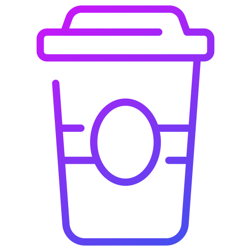

ABOUT
Dê-me um problema e o que lhe prometo é o meu total esforço na busca pela solução!
Paulista, 28 anos, casado, pai de dois meninos, pintor, escritor fotográfo, ciclista amador, fã do
Stephen King e cafólatra.
Atuo com computadores desde o Windows 2000ME, Linux Kurumin, internet
discada e a mais de 17 anos!
Uma mente inquieta e curiosa.
Amante da tecnologia e de saber como as coisas funcionam.
Fascinado pela forma como algo pode criar vida apenas com uma folha de papel e um pouco de tinta.
Adoro escrever sobre as viagens da minha mente.
Com um desejo imenso por continuar constante...
Constante em evolução, progresso e resultado.
Senior Analyst | Hacker Ético (Red Team) | Desenvolvedor de aplicações web
Ansioso para te conhecer e te ajudar a RESOLVER o seu problema com uma solução criativa, inovadora e um
ótimo café! 💡 💻 ☕ 😎
